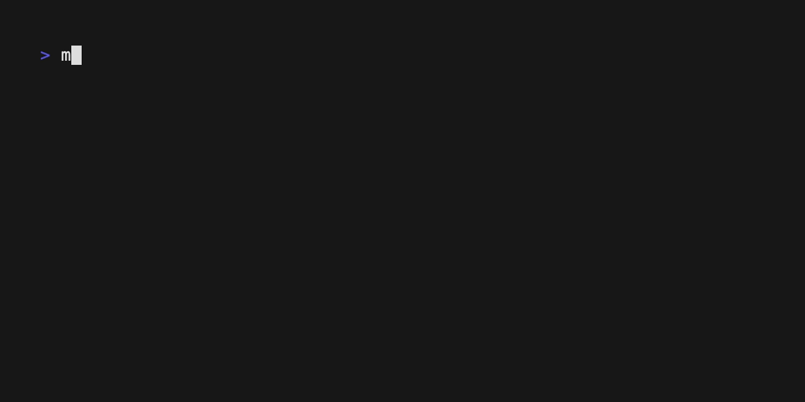

Durant nos cours de programmation bas niveau en C, nous avons été amenés à créer trois projets affin de tester nos connaissances du langage C.
Projet Numéro Magique
Notre premier projet était celui de créer un programme dit "Numéro Magique"
Le numéro magique consiste à déviner un nombre aléatoirement choisi par le programme. Ce dernier ne peut nous aider qu'en nous disant si le nombre est plus grand ou plus petit que notre essai.
Projet Morpion (Tic Tac Toe)
Notre deuxième projet était de créer un morpion entièrement jouable dans le terminal.
Le jeu du morpion consite à aligner trois croix ou cercles horizontalement, verticalement ou en diagonale dans une grille de 3 par 3 cases contre un ordinateur.

Projet Sokoban
Notre troisième projet était de recréer le jeu Sokoban jouable dans le terminal.
Sokoban est un jeu d’énigme où le joueur doit pousser stratégiquement des boîtes sur des emplacements cibles désignés dans un labyrinthe d’entrepôt contraint.